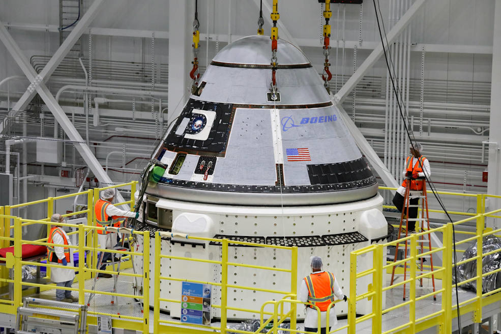

Historie
V první fázi programu CCDev, roku 2010, dostal Boeing od NASA 18 miliónů dolarů na předběžný návrh lodi. Ve druhé fázi, roku 2011, Boeing získal 93 miliónů na další vývoj. Kromě CST-100 bude mít NASA k dispozici i loď Dragon 2 konkurenční společnosti SpaceX. CST-100 má být uzpůsobena k vynášení různými nosiči, a sice nosnými raketami Atlas V, Delta IV a Falcon 9. Pro první start zvolil Boeing raketu Atlas V
Součanost

Loď Starliner Má za sebou jenom hrstku uspěšných misí. V součastnosti čeká na první nezkušební misi k ISS, ale jednoduše řečeno zatím nemá praktické využití. To se má v budoucnu však změnit.
Budoucnost

V budoucnu se loď CST-100 Starliner staví hlavně jako konkurence a alternativa stavající lodi Dragon 2 i když na ni technologicky nedosahuje. Starliner plánuje v budoucnu mít i vlasdní sadu kosmický obleků pro IVA (inner vehicular activity).